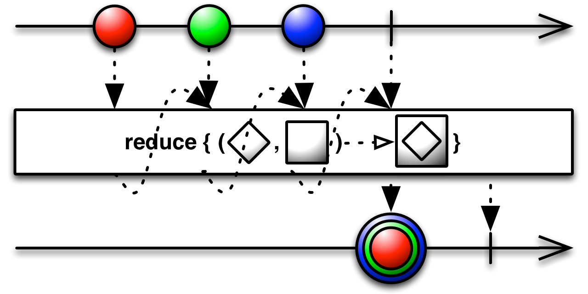

定义：java中的响应式编程，是与异步数据流交互的编程范式
用途：对数据流可以方便的进行组合、分离、过滤、变换等等操作
一个基本的例子
Observable.create(new ObservableOnSubscribe<Integer>() {
@Override
public void subscribe(@NonNull ObservableEmitter<Integer> e) throws Exception {
e.onNext(1);
e.onNext(2);
e.onNext(3);
e.onNext(4);
e.onComplete();
}
}).reduce(new BiFunction<Integer, Integer, Integer>() {
@Override
public Integer apply(@NonNull Integer integer, @NonNull Integer integer2) throws Exception {
return integer + integer2;
}
}).subscribeOn(Schedulers.computation())
.observeOn(AndroidSchedulers.mainThread())
.subscribe(integer -> {
Log.e("result is:", integer + "");
},throwable -> {
throwable.printStackTrace();
});

要点：被观察者(cold/hot)、观察者、操作符、线程切换、错误处理
api1.getDataxxx(new CallBack(){
onSuccess(Data data1){
//dosomething
..
..
..
api2.getDataxxx(data1.id,new CallBack(){
onSuccess(Data data2){
//dosomething
...
...
...
}
})
}
})
observableApi1.getDataxxx()
.flatMap(data1->{
//dosomething
..
..
..
return observableApi2.getDataxxx(data1.id)
})
.subscribe(data2->{
//dosomething
...
...
...
})
List<Cat> cats = api.queryCats(query);
Cat cutest = findCutest(cats);
Uri savedUri = api.store(cutest);
传统异步式：
api.queryCats(query, new Api.CatsQueryCallback() {
@Override
public void onCatListReceived(List<Cat> cats) {
Cat cutest = findCutest(cats);
api.store(cutest, new Api.StoreCallback() {
@Override
public void onCatStored(Uri uri) {
cutestCatCallback.onCutestCatSaved(uri);
}
@Override
public void onStoreFailed(Exception e) {
cutestCatCallback.onError(e);
}
});
}
@Override
public void onQueryFailed(Exception e) {
cutestCatCallback.onError(e);
}
});
Rx异步式：
Observable<List<Cat>> catsListAsyncJob = apiWrapper.queryCats(query);
Observable<Cat> cutestCatAsyncJob = catsListAsyncJob.map(cats -> findCutest(cats));
Observable<Uri> storedUriAsyncJob = cutestCatAsyncJob.flatMap(cat -> apiWrapper.store(cat));
Rx链式：
apiWrapper.queryCats(query)
.map(cats -> findCutest(cats))
.flatmap(cat -> apiWrapper.store(cat))
.subscribe(uri -> dosomething);
需求：一个页面初始化时有2个api请求，当这两个api请求都完成后拿到数据再去发起第三个请求，第三个请求完成后更新UI
传统写法：
Data vData1;
Data vData2;
public getData3(){
api3.get(vData1,vData2,new Callback(){
onSuccess(Data data3){
updateUI();
}
})
}
api1.get(params1,new Callback(){
onSuccess(Data data1){
vData1=data1;
if(vData2!=null){
getData3();
}
}
})
api2.get(params2,new Callback(){
onSuccess(Data data1){
vData2=data2;
if(vData1!=null){
getData3();
}
}
})
使用Rxjava:
Observable.combineLatest(observableApi1.get(params1),observableApi2.get(param2),(data1,data2) -> new Data[]{data1,data2})
.flatMap(datas-> observableApi3.get(datas[0],datas[1]))
.subscribe(data3 -> updateUI());
标准化，可以与其他Reactive Stream实现的库混合使用
MISSING
如果流的速度无法保持同步，可能会抛出MissingBackpressureException或IllegalStateException。
BUFFER
上游不断的发出onNext请求，直到下游处理完，也就是和Observable一样了，缓存池无限大，最后直到程序崩溃
ERROR
会在下游跟不上速度时抛出MissingBackpressureException。
DROP
会在下游跟不上速度时把onNext的值丢弃。
LATEST
会一直保留最新的onNext的值，直到被下游消费掉
Retrofit 默认处理策略：
observable.toFlowable(BackpressureStrategy.LATEST)
Observable.create(...)
.lift1(...)
.subscribeOn(scheduler1)
.lift2(...)
.observeOn(scheduler2)
.lift3(...)
.subscribeOn(scheduler3)
.lift4(...)
.observeOn(scheduler4)
.doOnSubscribe(...)
.subscribeOn(scheduler5)
.observeOn(scheduler6)
.subscribe(...);